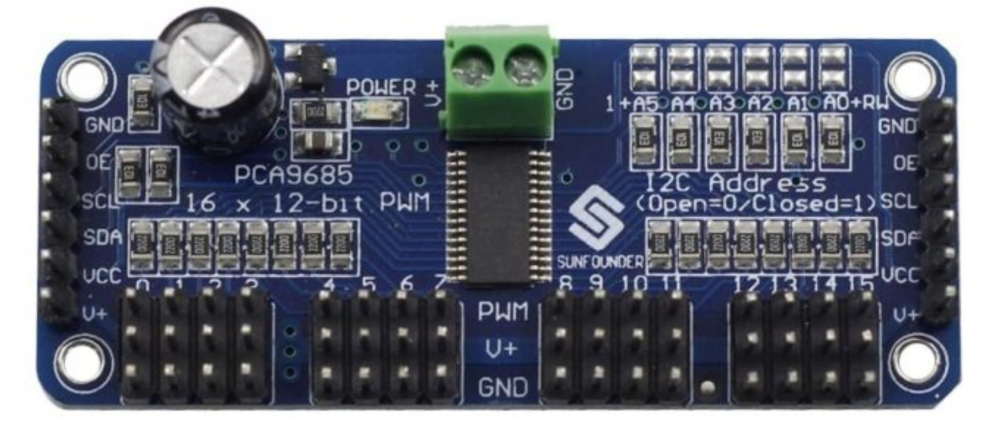

Here is how to put together your next model!
Welcome to Satsuma!
Satsuma is the level available in the Lemon Robotics Kit that focuses mostly on hardware and electronics. To build it, make sure you have all the elements required (learn more about these in the prerequisites segment) and follow the steps below!
Start Now: Build Lime
Assemble the Kraftplex Body & Learn About 3D Design
1) The Main Body
In this document you will learn how to put together the Turtle robot: Satsuma. You will need glue and this guide to complete this step.
Pro tip: make sure to check the video above to see how everything is done!
Take the two leg pieces with the large hole on one and the circle on the other. Combine the 3 pieces after carefully inserting the black servo piece in. To guarantee that it will stick, insert a screw into the little hole. Repeat four times through this stage. Insert the servo into a rectangular hole. After adding the rectangular frame around the servo, secure it by screwing from both sides. After screwing combine the leg and servo. Last but not least, attach the small screw to the black servo component to keep it stationary. Repeat four times through this stage.
The same procedure will be done for the hole in the front, but this time the leg parts' opposite corner will be square-shaped rather than round; also the servos' direction will be reversed. Once finished, glue the other corner to the head. There is a darkish area where you can receive assistance while gluing your piece.
2) The Head
Take the piece with the capacity to bend and two face-shaped pieces. Start building and gently glue them symmetrically. The small rectangle piece that will make up the nose is then glued in front place. With the two bottom pieces assembled and glued, the head is now finished. Attach the head to the body as shown below.
3) The shell
Put the pieces you see in the video in a suitable pattern around the shell. Glue the parts after arranging. This is the shell. Now attach it to the main body you have assembled so far.
The final robot should look like as shown below. Congratulations! Now that the turtle assembly is complete, let's move on to the electronics.
And now, the electronics!
3)Mastering Electronics With Satsuma
When compared to the previous project lime, Satsuma has a lot more involved when it comes to electronics. It utilizes many more tools that require even more conceptual knowledge. So going by a level to level basis this project will be the hardest challenge when it comes to electronics. First lets familiarize ourselves with all the components we will be using. Here is a list of materials:
1 x HC-SR04 Ultrasonic Sensor
1 x Breadboard
1 x 1kΩ resistor
1 x 2kΩ resistor
1 x pca9685 16 channel pwm driver
2 x16850 Li-Ion batteries
1 x 5v voltage regulator
Multiple MF, MM, and FF jumper cables

Amongst all of these components we will first start the assembly with the pca9685 as it will be the center of attention for this kit. However before we get into how this vital component works and how we will use it, we need to understand why we have chosen to use it in the first place. As you might’ve remembered the pico has only two ports that has a continuous electrical output: The 3v3 OUT and the Vbus. Outside of these pins the pico cannot power any components. Therefore it becomes exponentially more difficult to add servos after the two we had initially used in lime. Additionally if we were to connect more servos to the pico directly there would be an increase in the delay for each component we try to communicate with, meaning that the simultaneous rotation of servos would be almost impossible. To circumvent this problem we use a servo driver, the pca9685. The pca acts as a middle-man that can house up to 16 servos at once on a single board. The way that his middleman process works is that the pca uses an external power supply to power all of the servos connected to it while also using it’s connection to the pico to power itself up and use I2C to communicate back and forth with the servos and pico.

As you can see from the picture above as well as the one that should be next to you the pca9685 has pins to the bottom and the sides. For our purposes since we only need one board for the amount of servos we will be controlling we will be using only one of the duplicate pin sets to the sides. From those pins we will be connecting tot he raspberry pi pico’s GND, 3v3 OUT and I2C pins. Specifically the locations for these connections are:
GND to pin 3
SCL to pin 2
SDA to pin 1
VCC to pin 36
Additionally there is the top and bottom of the board that require our attention. The top of the board is where we will be connecting our external power supply and the bottom has all the channels that we can connect our servos to. Let’s start by connecting the servos on Satsuma to these channels. Here is the list of how we have connected these servos:
Head to channel 0
Front right leg to channel 1
Front left leg to channel 2
Back right leg to channel 3
Back left leg to channel 4
Next we need to add power to the board through the power input to the top of the board. These can be located next to the power light and have V+ and GND written next to them. The pca9685 requires a 5V input from an external power source to be able to power all channels simultaneously. If there too little power the board cannot control multiple channels and if there is too much power, the board will send so much power that the servos circuits will burn and cease functioning. Therefore to get a nearly 5V output from our power source we will be utilizing a voltage regulator.
Without getting into the specifics a voltage regulator is a circuit that creates and maintains a fixed output voltage, irrespective of changes to the input voltage or load conditions. We will be using a 5V voltage regulator to keep our voltage at a nearly constant 5 volts. As our external power source we will be using 18650 Lithium-Ion batteries. The benefit of this type of battery is that they are rechargeable so if they ever run out you don’t need to worry about buying or getting a replacement. However normally each battery produces around 4.2V of charge, and with the battery case holder we will be using each battery will produce approximately 3.7V of charge, with the two batteries adding up to a nearly 7.4V output. Since this voltage exceeds the amount we need for our board we need to find a way to connect the batteries and voltage regulator together. To do this we will be using a breadboard.
A breadboard (pictured above) is a type of device that we will be using to build our circuits. The breadboard simplifies building electronic circuits by having a fixed direction that current travels through. When placing the breadboard so that the line in the middle is horizontal (like the picture above) the direction that the current travels in is vertical through each hole. The current travels until it reaches the dead space in the middle which seperates the two parts of the breadboard. So for example if we were to connect our voltage regulator to the breadboard the current travelling would look like the green lines.
The voltage regulators has 3 pins and starting from the left these pins are VIN, GND, and VOUT respectively. VIN is the input of power that we will be using, meaning the batteries, and the VOUT is what we will be connecting to the pca9685. So to connect our batteries for example we will be using the columns of the breadboard where the voltage regulator has the left and the middle pin connected. This way the current from the batteries will travel through the breadboard and reach the voltage regulator.
TNow that we have connected the voltage regulator and the battery together next lets test if our regulator works. To do this we will be using a multimeter, set the multimeter to double digit voltage control. Afterwards connect the black adapter to the GND column and the red adapter to the VOUT column. If your regulator works correctly you will see a reading of approximately 5.00 volts on your multimeter. If it doesn’t work you may have done your wiring incorrectly or you may have faulty equipment. Make sure that the multimeter has the correct reading before proceeding. Next we will be connecting the PCA9685 to our circuit. To draw the current of 5V we will be placing a jumper cable again to the GND column and one to the VOUT column. Then place those to the PCA9685’s top pins that have the V+ and GND mark. It’s important to remember that if you accidentally place these parts in reverse you will short circuit the board making it completely unusable for any future projects including this one. When you have done so the circuit should look like this.
There is one last part remaining for connecting all the electrical circuits, which is connecting the ultrasonic sensor HC-SR04.
But before we begin we need to understand how an ultrasonic sensor works. We will be using the ultrasonic sensor for calculating the distance between our robot and objects in front of it. Ultrasonic sensors work by emitting sound waves at a frequency too high for humans to hear. They then wait for the sound to be reflected back, calculating distance based on the time required. This the fundamental concept of ultrasonic sensors, however we will delving a little further into how these calculations are made so that we can understand our code better. The ultrasonic sensor we will be using, the hc-sr04, features two ultrasonic transducers: a ultrasonic transmitter and receiver. The transmitter converts electrical energy into ultrasound and the receiver converts the ultrasound to electrical signals. Specifically the transmitter converts the electrical signal into 40 KHz ultrasonic sound pulses. When the receiver receives these pulses, it produces an output pulse whose width is proportional to the distance of the object in front. This sensor provides excellent non-contact range detection between 2 cm to 400 cm (~13 feet) with an accuracy of 3 mm. Let’s look at the pinout of the HC-SR04:
VCC: Supplies power to the HC-SR04.
Trig (trigger): The pin is used to trigger ultrasonic sound pulses. By setting this pin to OUT/HIGH (Meaning sending it an electrical current) the sensor initiates an ultrasonic burst.
Echo: This pin goes high when the ultrasonic burst is transmitted and remains high until the sensor receives an echo, after which it goes low. By measuring the time the Echo pin stays high, the distance can be calculated.
GND: This pin is used to ground the sensor.
Now let’s properly look at how distance is calculated with this sensor. It all starts when the trigger pin is set OUT/HIGH. In response, the sensor transmits an ultrasonic burst of eight pulses at 40 kHz. This 8-pulse pattern is specially designed so that the receiver can distinguish the transmitted pulses from ambient ultrasonic noise. These eight ultrasonic pulses travel through the air away from the transmitter. Meanwhile the echo pin goes high to initiate the echo-back signal. If those pulses are not reflected back, the echo signal times out and goes low after 38ms (38 milliseconds). Thus a pulse of 38ms indicates no obstruction within the range of the sensor.
If those pulses are reflected back, the echo pin goes low as soon as the signal is received. This generates a pulse on the echo pin whose width varies from 150 µs to 25 ms depending on the time taken to receive the signal.
Although we could use the pulse received from the pin, most algorithms (ours included) will utilize the time it took for the echo pin to go low instead. Knowing this let’s convert our data to distance. This can be worked out using the simple distance-speed-time equation.
Distance = Speed x Time
Let us take an example to make it more clear. Suppose we have an object in front of the sensor at an unknown distance and we receive a pulse after 0.001 seconds on the echo pin. Now let’s calculate how far the object is from the sensor. We know the time it took so we can use that in our equation, and we also know the speed since the emitted pulse travels at the speed of sound meaning 343 m/s. Because our ultrasonic sensor is most effective at a range on 2-400 cm’s we will be converting the speed of sound to cm, giving us nearly 34300 cm/s.
Distance = 34300 cm/s x 0.001 s
But we’re not done yet! Remember that the echo pulse indicates the time it takes for the signal to be sent and reflected back. So to get the distance, you have to divide your result by two.
Distance = (34300 cm/s x 0.001 s) / 2
Distance = 17.15 cm
The result of this equation gives us the distance recorded by the ultrasonic sensor which in this case would be approximately 17.15 cm. So all in all we could simplify the equation of calculating distance from an ultrasonic sensor to this formula:
Distance = (34300 cm/s x Time Elapsed Between Echo States) / 2
Distance = 17.15 cm
Finally after learning all there is to know about ultrasonic sensors we can start working in a physical space and create the circuit for this sensor.
Note: When connecting the ultrasonic sensor keep in mind that we will be working on the opposite side of the breadboard (The one facing away from the voltage regulator). So whenever the connection is represented at the top that is actually the opposite side to the voltage regulator circuit.
With this final addition the whole electronic circuit for Satsuma is finished. So now we can move on to coding Satsuma with the pico.
4)Coding “Satsuma”
First we’ll start by importing our libraries:
from adafruit_servokit import ServoKit
import board
import busio
import adafruit_pca9685 import PCA9685
import time
import adafruit_hcsr04
There are some new libraries here that we need to get familiar with. Do you remember all the code you had to write to move your servos and the calculations to get distance from an ultrasonic sensor, well now you won’t have to write those long pieces of code everytime thanks to these libraries: adafruit_servokit, and adafruit_hcsr04. These libraries have methods that we will be using to more conveniently access features such as moving servos through certain degrees and getting distance from our ultrasonic sensors. Additionally we will also be using the busio library to get the I2C input/output from our pico and communicate with the pca9685, which also has a library that we can use. Next we will set get I2C bus to be able communicate with our connected I2C devive, the pca9685.
i2c_bus = busio.I2C(scl=board.GP1, sda=board.GP0)
Here we have created a reference to an I2C address, specifically the one we have connected our servo board to, which we will later on use to communicate with the device connected at that address. By utilizing this address we will create a pca object from the pca9685 library and set the frequencies of output to match our servos.
pca = PCA9685(i2c_bus)
pca.frequency = 50
Here we have created a reference to an I2C address, specifically the one we have connected our servo board to, which we will later on use to communicate with the device connected at that address. By utilizing this address we will create a pca object from the pca9685 library and set the frequencies of output to match our servos.
kit = ServoKit(channels=16, i2c=i2c_bus)
This library has been configured to work with many servo drivers, including the pca9685! But to be able to use the methods of this library we need to create its object with the amount of channels the servo driver has and the I2C address. Next we need to create our ultrasonic sensor object to gauge the distance with this libraries code.
sonar = adafruit_hcsr04.HCSR04(trigger_pin=board.GP17, echo_pin=board.GP16)
If you have placed the trig and echo pins at different pins please specify accordingly in your own code. Also remember that when referring to GP pins while coding, we always use the digital address instead of the physical placement. Now we will create the main loop of our algorithm:
while True:
if sonar.distance() >= 50
print(sonar.distance())
Here we have used the distance method to acquire the distance (in centimeters) calculated by our ultrasonic sensors, which utilizes the same equation we did previously but shortens all of that calculation to a single line! We can also view the output of the sensor thanks to the print statement we have used. With the information in hand when the turtle is away from an object at a safe distance we will start moving the servos with the servokit library. Continuing the code from the last if statement:
kit.servo[0.angle = 40 #head
kit.servo[1.angle = 90 #left front
kit.servo[2.angle = 40 #right front
kit.servo[3.angle = 50 #right back
kit.servo[4.angle = 90 #left back
time.sleep(0.5)
kit.servo[0.angle = 20 #head
kit.servo[1.angle = 110 #left front
kit.servo[2.angle = 20 #right front
kit.servo[3.angle = 90 #right back
kit.servo[4.angle = 50 #left back
kit.servo[0.angle = 60 #head
time.sleep(1)